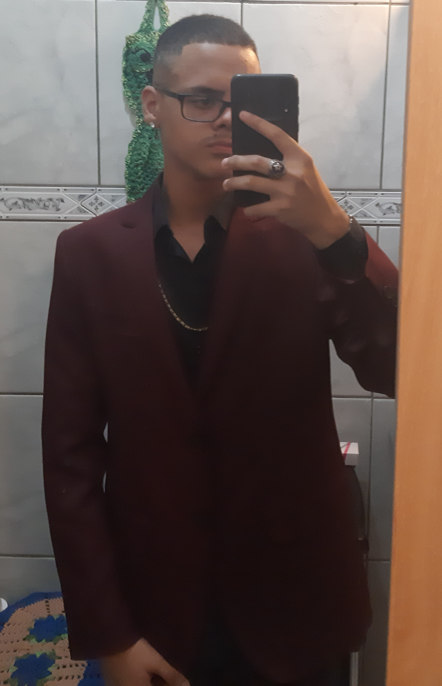

Meu nome é Vitor Lacerda 
Atualmente, cursando Bacharelado em Sistemas de Informação pela Unoeste. Aspirante à Web Developer Back-End. Com 18 anos, possuo experiência avançada na área de informática de maneira autônoma, já que sempre fui um entusiasta da tecnologia e sempre procurei estudar sobre a área esporadicamente.
De maneira geral, meus passatempos são jogos e leitura, porém, também gosto de exprimentar algumas coisas diferentes na área da programação e ouvir música enquanto faço isso, geralmente, meus estilos de música que mais ouço são Trap e Samba, porém pode me considerar com um gosto musical eclético. Minhas leituras são voltadas à ficção científica ou conteúdos de História e curto bastante jogos mais desafiadores (chamados de "soulslike") e ARPG (Action Role Play Gaming).